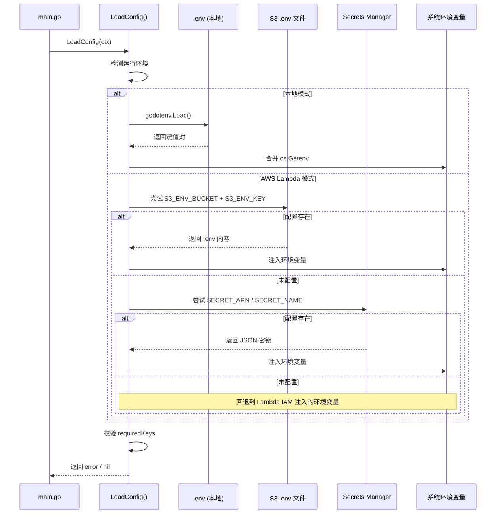

基于 Go 语言构建的 AWS 云成本优化定时任务引擎，自动执行预算检查、成本分析、用量预测、规格优化建议，并支持多平台广播通知与报告归档。
AWSFinOps Worker 是一个无状态的定时任务工作器，在 AWS Lambda 中由 EventBridge 按计划触发，自动完成一整套云成本治理流程。
预算检查 → 成本查询 → 成本预测 → 用量对比 → 规格优化 → 综合分析 → 广播通知，全流程自动化。
本地循环模式模拟 EventBridge，配合 AWS Lambda 生产模式，开发与生产无缝切换。
PDF（高管，带品牌水印）、JSON（开发者 API 集成）、CSV（财务数据分析），满足不同角色需求。
企业微信、飞书、钉钉、Email、Slack、Telegram、Discord，自动检测配置并发送报告。
旧报告自动归档到 Glacier 存储，存储成本极低，满足合规与历史数据追溯需求。
S3 .env → Secrets Manager → 系统环境变量，优先级递进，确保生产环境安全。
兼容 EMF 格式，原生支持 CloudWatch 监控与告警，无需额外配置。
从触发到执行，从数据采集到输出分发，全链路清晰设计


internal/aws 包封装 AWS SDK 客户端，不反向依赖上层业务包，有效避免循环引用。
7 步流水线，任一步骤失败不中断后续流程，容错设计保障任务可靠执行

| 状态 | 说明 | 对最终状态的影响 |
|---|---|---|
| ok | 步骤执行成功 | 正常 |
| pending_implementation | 功能待实现（占位步骤） | 不影响，不计入失败 |
| warn | 有警告但不致命 | 最终状态可能为 partial_failure |
| error | 步骤执行失败 | 最终状态可能为 error |
| skipped | 配置关闭，主动跳过 | 不影响 |
三层配置加载，安全优先，已存在的环境变量不会被覆盖


多格式报告输出，自动归档到 S3 Glacier，兼顾当下查阅与长期保存


| 格式 | 受众 | 特点 |
|---|---|---|
| 高管 / 管理层 | 精美排版、品牌水印、彩色表格 | |
| JSON | 开发者 / API | 结构化、schema_version、RFC3339 |
| CSV | 财务 / 数据分析 | Excel 兼容（UTF-8 BOM） |
| 存储类型 | 最低存储时长 | 取回费用 | 适用场景 |
|---|---|---|---|
GLACIER_IR（默认） |
90 天 | 低 | 历史报告快速检索 |
GLACIER |
90 天 | 中 | 长期归档（分钟级取回） |
DEEP_ARCHIVE |
180 天 | 高 | 合规归档（小时级取回） |
STANDARD_IA |
30 天 | 最低 | 不常访问但需即时取回 |
一次配置，多平台触达，自动检测启用状态，单平台失败不影响整体


单平台失败不影响其他平台，任意平台发送失败只记录 WARN，其他平台继续发送。
BROADCAST_ENABLED=false 可一键关闭所有广播，方便调试和维护。
未配置任何平台时，静默跳过不报错，不污染日志也不影响主流程。
清晰的模块划分，职责明确，易于扩展和维护
AWSFinOps/ ├── main.go # 程序入口（本地循环 + Lambda 双模式） ├── go.mod # Go 模块定义 ├── .env.example # 环境变量示例 ├── LICENSE # MIT 许可证 │ ├── internal/ │ ├── config.go # 三层配置加载器 │ │ │ ├── worker/ │ │ └── engine.go # Worker 核心引擎（7 步流水线） │ │ │ ├── archive/ │ │ └── s3.go # S3 Glacier 归档服务 │ │ │ ├── aws/ # AWS SDK 封装层 │ │ ├── lambda.go # Lambda 事件处理器 │ │ ├── costexplorer.go # Cost Explorer 数据模型 │ │ ├── rightsizing.go # 规格优化数据模型 │ │ ├── budget.go # Budgets API 封装 │ │ ├── billing.go # 计费共享类型 │ │ └── s3.go # S3 空壳（归档见 archive 包） │ │ │ ├── billing/ # 业务逻辑层 │ │ ├── budget.go # BudgetState（线程安全预算状态） │ │ ├── budget_management.go # 预算管理数据模型 │ │ └── analysis.go # 成本分析报告 │ │ │ ├── services/ # 外部服务集成 │ │ ├── broadcast.go # 多平台广播服务 │ │ └── handler.go # 空壳（历史遗留） │ │ │ └── utilities/ # 通用工具 │ ├── logger.go # 结构化日志（CloudWatch EMF） │ ├── document.go # PDF/JSON/CSV 报告生成 │ ├── aws.go # AWS 环境检测工具 │ └── fonts/ │ └── NotoSansSC-Regular.ttf # PDF 中文字体 │ ├── test/ # 集成测试 │ └── ... │ ├── docs/ # 项目文档 │ ├── index.html # 本页面 │ └── diagrams/ # 架构图表（SVG） │ └── reports/ # 运行时生成的报告（默认目录）
几分钟内启动你的第一个 FinOps 任务
# 1. 克隆仓库
git clone <repo-url>
cd AWSFinOps
# 2. 配置环境变量
cp .env.example .env
# 编辑 .env，填入 AWS 凭证和所需配置
# 3. 安装依赖
go mod download
# 4. 执行一次（调试模式）
WORKER_ONCE=true go run .
# 5. 循环模式（模拟 EventBridge，每 6 小时一次）
go run .{
"timestamp": "2026-06-30T21:57:35+08:00",
"level": "INFO",
"app": "AWSFinOps",
"component": "FinOpsWorker",
"operation": "Run",
"status": "success",
"elapsed": "1.234ms",
"message": "Worker 执行完成",
"extra": {
"run_id": "finops-20260630-215735-abc123",
"status": "partial_failure",
"steps": "7"
}
}所有可配置项一览，灵活适配不同部署场景
| 变量名 | 默认值 | 说明 |
|---|---|---|
AWS_REGION | ap-east-1 | AWS 区域 |
AWS_ACCESS_KEY_ID | - | 必填 AWS Access Key |
AWS_SECRET_ACCESS_KEY | - | 必填 AWS Secret Key |
AWS_ACCOUNT_ID | - | AWS 账号 ID（PDF 水印，大写） |
| 变量名 | 默认值 | 说明 |
|---|---|---|
WORKER_INTERVAL | 6h | 本地模式循环间隔（支持 30s/5m/6h 格式） |
WORKER_ONCE | false | true = 执行一次后退出 |
IS_AWS | - | 强制指定是否在 AWS 环境运行 |
| 变量名 | 默认值 | 说明 |
|---|---|---|
EXPORT_REPORT | true | 是否启用报告导出 |
REPORT_OUTPUT_DIR | ./reports | 报告输出目录 |
EXPORT_PDF | true | 是否导出 PDF |
EXPORT_JSON | true | 是否导出 JSON |
EXPORT_CSV | true | 是否导出 CSV |
| 变量名 | 默认值 | 说明 |
|---|---|---|
S3_ARCHIVE_BUCKET | - | S3 Bucket 名称（不配置则不启用归档） |
S3_ARCHIVE_REGION | ap-east-1 | Bucket 所在区域 |
S3_ARCHIVE_STORAGE_CLASS | GLACIER_IR | 存储类型 |
S3_ARCHIVE_PREFIX | finops-reports/ | 对象前缀 |
基于 AWS 无服务器架构，按需付费，自动扩缩容

Lambda 执行角色所需的最小权限：
{
"Version": "2012-10-17",
"Statement": [
{
"Effect": "Allow",
"Action": [
"ce:GetCostAndUsage",
"ce:GetCostForecast",
"ce:GetRightsizingRecommendation"
],
"Resource": "*"
},
{
"Effect": "Allow",
"Action": [
"s3:GetObject",
"s3:PutObject",
"s3:CreateBucket",
"s3:PutBucketEncryption",
"s3:PutPublicAccessBlock"
],
"Resource": [
"arn:aws:s3:::your-config-bucket/*",
"arn:aws:s3:::your-archive-bucket/*"
]
},
{
"Effect": "Allow",
"Action": [
"secretsmanager:GetSecretValue"
],
"Resource": "arn:aws:secretsmanager:region:account:secret:your-secret-*"
},
{
"Effect": "Allow",
"Action": [
"logs:CreateLogGroup",
"logs:CreateLogStream",
"logs:PutLogEvents"
],
"Resource": "arn:aws:logs:region:account:*"
}
]
}精心挑选的技术组合，性能与可维护性并重
主编程语言，编译型语言，启动快、性能高，非常适合 Lambda 无服务器场景。
官方 AWS SDK for Go v2，模块化设计，按需加载，包体积更小。
PDF 报告生成库，支持中文字体嵌入、水印、表格等高级排版功能。
.env 文件解析，本地开发环境配置加载，简单可靠。
自研结构化日志，兼容 CloudWatch Embedded Metric Format，原生支持指标提取。
无服务器运行时，按需付费，自动扩缩容，与 EventBridge 完美配合。